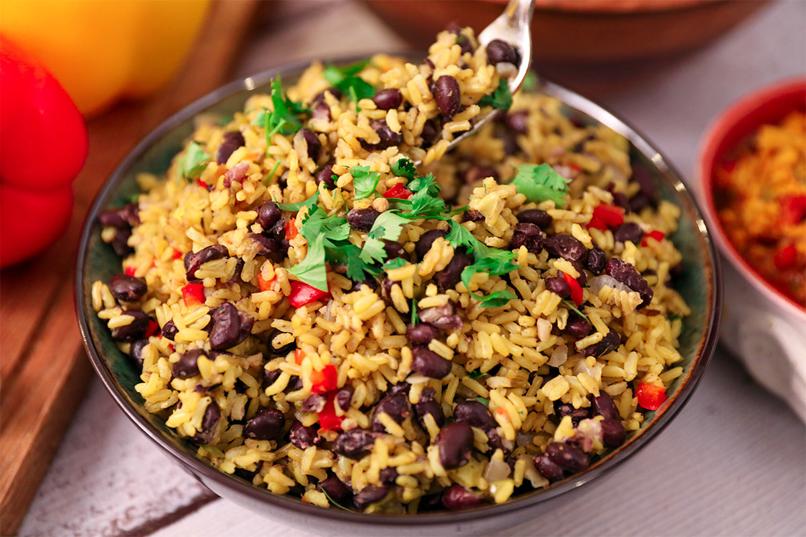

Gallo Pinto

Directions
-
Heat oil in a frying pan over medium heat. Add onion, bell pepper,
celery, and garlic and saute until softened, 5 to 7 minutes. Stir in
black beans with their juices, salt, and pepper. Saute until some of
the liquid evaporates, 3 to 5 minutes. Stir in rice.
-
Cover and let simmer until vegetables are soft and flavors have
melded, about 15 minutes.
- Enjoy!
Back to main page